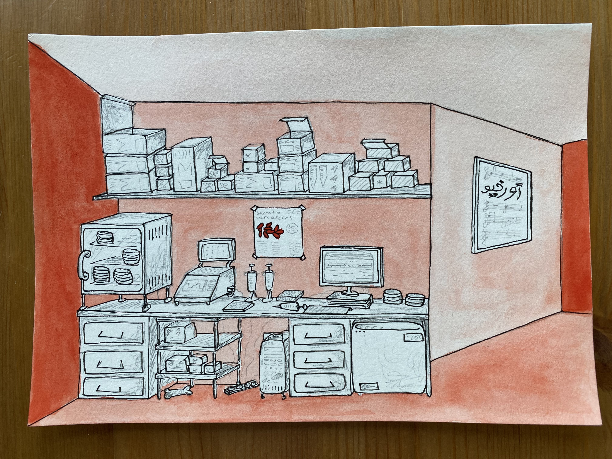
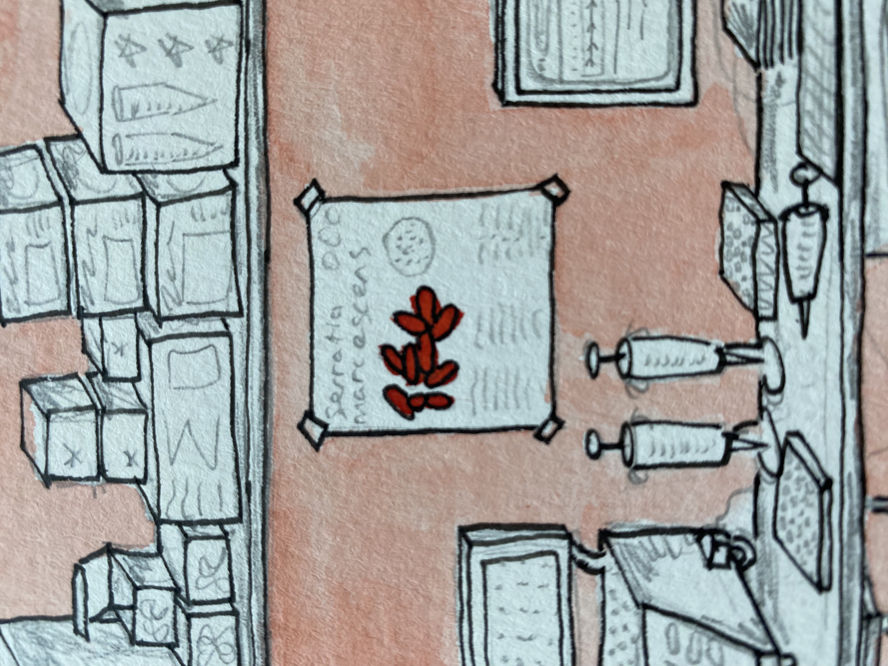
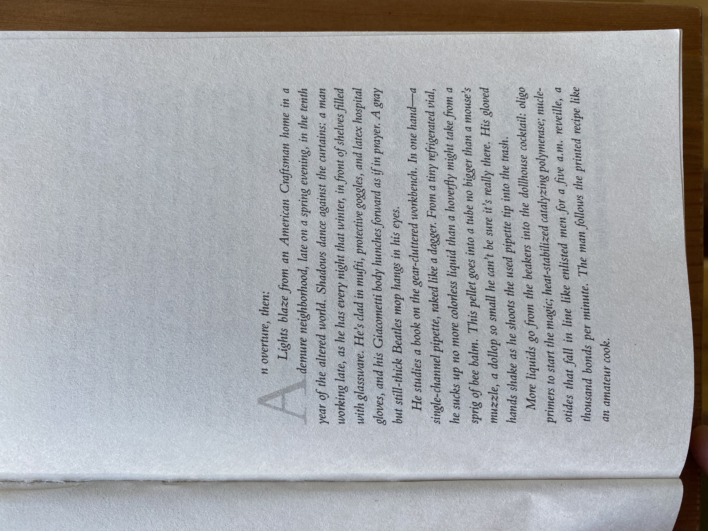

Peter Els' Lab
Pen and Watercolor on Paper
2023-8-22
This painting was inspired by Peter Els' home biology lab in the book Orfeo by Richard Powers.






This painting was inspired by Peter Els' home biology lab in the book Orfeo by Richard Powers.